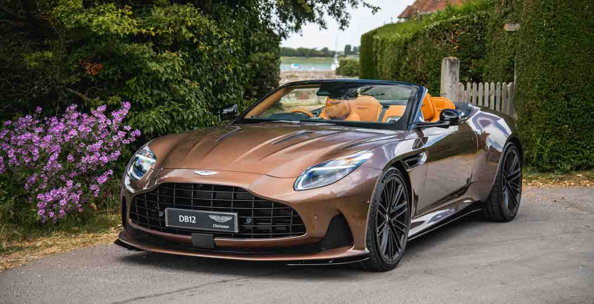

Magneto Bronze
An open-top model made to marvel, the DB12 Volante in Magneto Bronze is sleek, beautiful, and expertly crafted with sharp precision. Its stunning design allows torque to flow through its heart-stealing body, complemented by a reimagined, finely folded roof that elevates top-down driving to extraordinary levels while enhancing its already debonair appeal.
Inside, the cabin is lined with digital intelligence, featuring smarter sound and cutting-edge infotainment that captivates the senses. The DB12 Volante seamlessly blends analogue controls with modern technology, where the handcrafted past meets the fine-tuned future.